- In this webpage, we will study (prove) the
classic
Max-flow min-cut Theorem
- Here is the Wikipedia page: click here
- Definition: a cut
of a network
- Cut =
a set of
edges whose
removal will
divide/separate
the network into
2 halves X and Y
where:
- (source) S ∈ X and
- (sink) T ∈ Y
- In other words:
- Removing the edges in a cut will severe the source S from the sink T
- Cut =
a set of
edges whose
removal will
divide/separate
the network into
2 halves X and Y
where:
- Example: 2 cuts
in the network
- Cut 1:
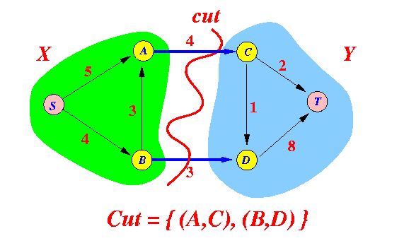
- Cut 2:

- Cut 1:
- Definition:
the capacity of a cut
- Capacity of a cut =
the sum of the
capacity of the edges
in the cut that are
oriented from
a vertex ∈ X to
a vertex ∈ Y
Note:
- These edges can be used to "carry" flow from S → T
Example: capacity of cuts
- Cut 1:
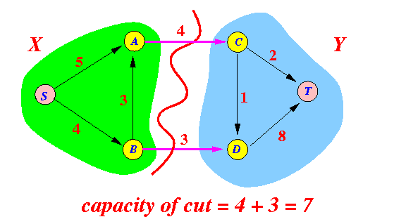
- Cut 2:

Note:
- The
capacity of edge B → A
is not included in
the sum
because
B → A is
directed from a vertex in
Y to
a vertex in
X
- Only edges oriented from a vertex in X to a vertex in Y are used to "carry" flow from S → T !!!
- The
capacity of edge B → A
is not included in
the sum
because
B → A is
directed from a vertex in
Y to
a vertex in
X
- Capacity of a cut =
the sum of the
capacity of the edges
in the cut that are
oriented from
a vertex ∈ X to
a vertex ∈ Y
- Definition:
minimum cut and
min. cut capacity
- Minimum cut =
the cut in the network
that has the
smallest possible capacity
- Minimum cut capacity = the capacity of the minimum cut
- Minimum cut =
the cut in the network
that has the
smallest possible capacity
- Recall: maximum flow:
- Maximum flow = the largest possible flow from source S to sink T
- Proposition:
Maximum flow ≤ Capacity of the min. cut of the network
Proof:
- Consider any cut of
the basic network:
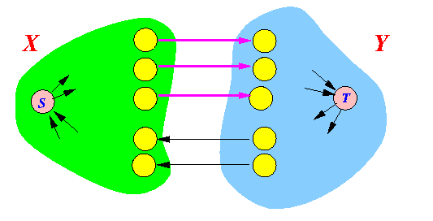 Note that:
- Any flow
must pass through the
edge of a cut
We have that:
Total flow = ∑ forward edge e f(e) - ∑ backward edge b f(b) ≤ ∑ forward edge e f(e) (f(e) ≤ c(e)) ≤ ∑ forward edge e c(e) - Therefore:
Total flow ≤ capacity of any cut
- Any flow
must pass through the
edge of a cut
- This is true for
every flow
- So it is true for the maximum possible flow also...
Therefore:
Maximum flow ≤ capacity of any cut
- Consider any cut of
the basic network:
- If the maximum flow
≤
capacity of any cut,
then
maximum flow
≤
capacity of the minimum cut:
Maximum flow ≤ capacity of minimum cut .......... (1)
- Theorem:
- In any basic network, the
value of the maximum flow is
equal to the
capacity of the
minimum cut
I.e.:
maximum flow = capacity of min. cut
Proof:
- From the previous discussion,
we have that:
maximum flow ≤ capacity of min. cut
- To complete the proof, we
show that:
- There
exists
a cut C such that:
capacity of cut C = maximum flow
We will construct the cut C from a maximum flow....
- There
exists
a cut C such that:
- Assume that
we have found a maximum flow
in the network
Now construct the following cut:
- X =
set of
vertices
that can be
reached
from source S
through
a flow-augmenting path
- Y = all the other vertices
Example:
- Here is a basic network with
a maximum flow:
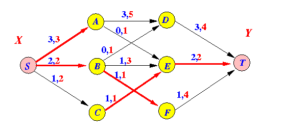
- Nodes that can
reached
from source S
through
a flow-augmenting path:
only the node: C
- This is the cut that we will
construct:
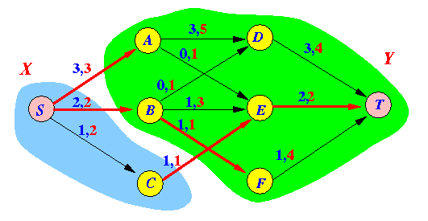
- X =
set of
vertices
that can be
reached
from source S
through
a flow-augmenting path
- We must prove the following:
- The above construction yields a
cut
I.e.:
- The source S and the sink T are in different sets !
- The total flow through the cut is equal to the capacity of the cut
We will prove the above by proving 3 special properties of this construction
- The above construction yields a
cut
- Property 1:
the construct yields a
cut, meaning:
- S ∈ X
- T ∉ X (i.e.: T ∈ Y)
Proof:
- By the way the set
X is formed,
the source S
is always included in X.
I.e.:
- S ∈ X
- We will show
T ∉ X
(i.e.,
T ∈ Y)
by contradiction
Suppose:
- T ∈ X
- From the construction of the
cut C:
- X = all vertices that can be reached from source S by a flow-augmenting path
- Because
T ∈ X,
then:
- There exists a flow augmenting path from S → T
which means:
- the current flow is not maximum !!!!
- That contradicts the given fact that the current flow is maximum !!!
- Taking stock:
- We have shown that:
- The source S and
the sink T are
in different parts
of the cut C:
- The source S and
the sink T are
in different parts
of the cut C:
Now we will show that:
- Total flow
over the cut is
equal to the
capacity of the cut
Recall:
- Capacity of a cut = sum of the capacity of all forward edges
- We have shown that:
- Property 2:
- For each forward edge e
in the
cut C:
f(e) = c(e)
Graphically illustrated:
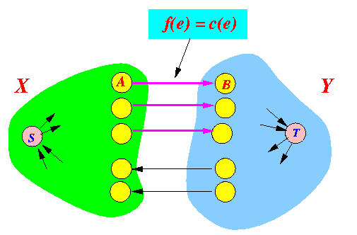
Proof:
- Select an
arbitrary forward edge
A→B of the
cut
- A ∈ X, and
- B ∈ Y (i.e., there is no flow augmenting path from S to B)
- Because
A
∈
X,
there is a flow augmenting path from
S → A:
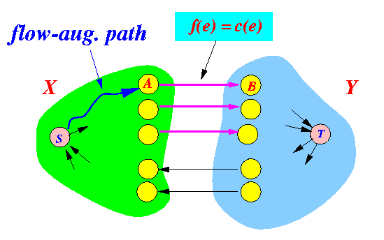
- If:
f(e) < c(e):
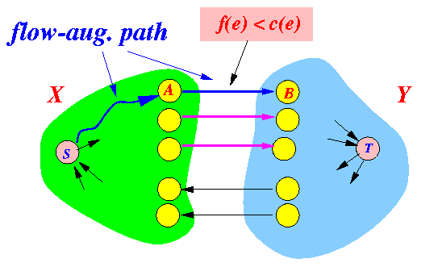 then:
- there will be a flow augmenting path from S → B (by increasing the flow through A → B) !!!
which mean:
- B ∈ X !!!
- This contradicts the fact that: B ∈ Y
- For each forward edge e
in the
cut C:
- Property 3:
- For each backward edge e
in the cut
C:
f(e) = 0
Graphically illustrated:
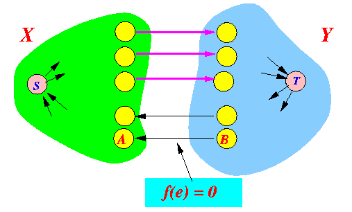
Proof:
- Select an
arbitrary backward edge
B→A of the
cut
- A ∈ X, and
- B ∈ Y (i.e., there is no flow augmenting path from S to B)
- Because
A
∈
X,
there is a flow augmenting path from
S → A:
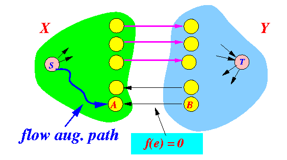
- If:
f(e) > 0:
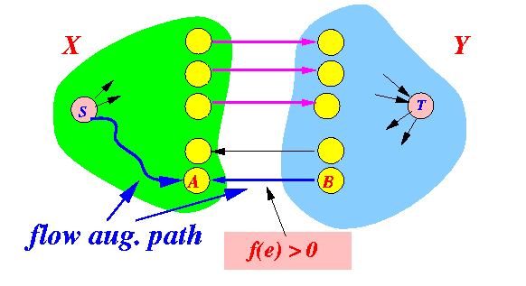 then:
- there will be
a flow augmenting path from
S → B
(by increasing the flow
through A → B) !!!
- If we decrease some flow on A→B, the
which mean:
- B ∈ X !!!
- there will be
a flow augmenting path from
S → B
(by increasing the flow
through A → B) !!!
- This contradicts the fact that: B ∈ Y
- For each backward edge e
in the cut
C:
- Therefore, we have the following situation at this particular cut:
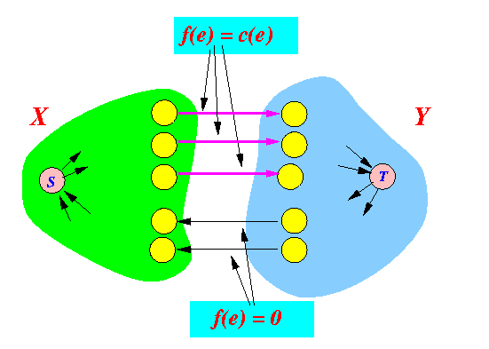 And therefore:
total flow = sum of f(e) for every forward edge e (f(e) = c(e) !!!) = sum of c(e) for every forward edge e = capacity of the cutIn other words:
- We found a cut that has the capacity equal to the max. flow !!!
That completes the proof...
- In any basic network, the
value of the maximum flow is
equal to the
capacity of the
minimum cut
- Find a minimum cut
in the following basic network:
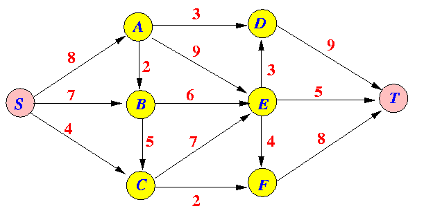 Solution: the max flow is achieved with this flow assignment
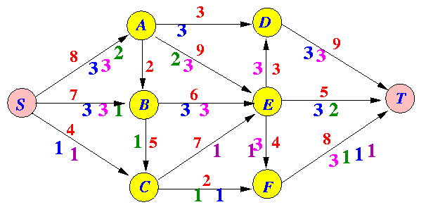 Here is the solution with saturated edges thickened:
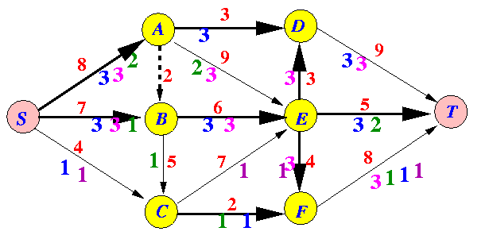 Find all node that can be reach by flow augmenting paths from S:
-
S
→ C
→ E
→ B
(through backward edge BE by decreasing flow !)
→ A (through backward edge AE by decreasing flow !)
The minimum cut:
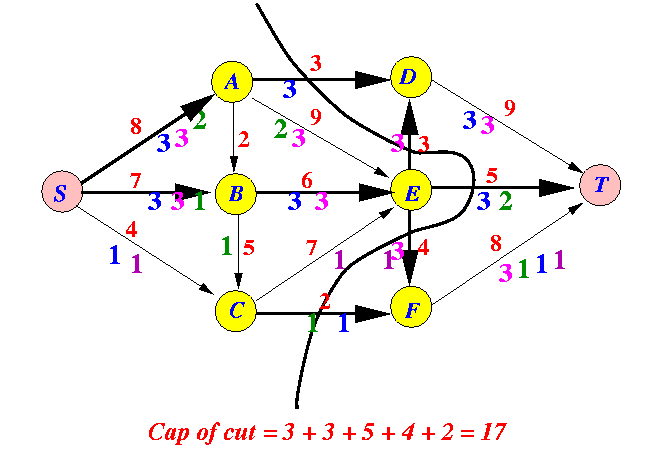 -
S
→ C
→ E
→ B
(through backward edge BE by decreasing flow !)